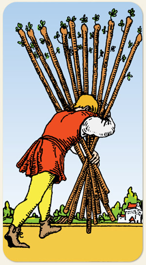

A sobrecarga, a responsabilidade excessiva e o estágio final de um esforço extenuante. A vontade do elemento Fogo atingindo seu limite de sustentação, um objetivo que está próximo, mas o peso para carregá-lo tornou-se quase insuportável. A opressão, o excesso de compromissos, a necessidade de delegar, fadiga profunda, ter tanto foco na meta a ponto de perder a visão do caminho.
O Dez é um novo ciclo do Às, só que em um novo patamar. É a força em movimento, capacidade de liderar, heroísmo versus terrorismo.
No Oito e no Quatro, ninguém segura o porrete, nos demais, cada pessoa segura apenas um porrete, no Dez, uma única pessoa carrega todos os porretes: alto nível de canalização.
Positivo: Realização, bravura, energia elevada, pessoas poderosas, conseguir algo precioso por meio do esforço, ser elevado da condição de humano para a condição de herói.
Negativo: Tentar fazer tudo isso sozinho, centralização disfuncional, um esforço que está além das forças, ataques de grandes proporções, terrorismo, espíritos trevosos com grandes poderes, esforços que não são capazes de permanecerem por muito tempo, dificuldade de realizar tarefas, picos de energia que prejudicam, esforço físico que lesiona, uma grande vontade de dominação.
Símbolos: Castelo ao Fundo, Árvores.
Cores: Azul, Vermelho, Laranjado, Verde, Branco.